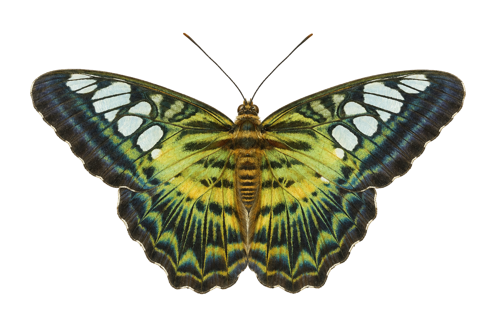

タテハチョウ類 · 087 / 165
トラフタテハ
Parthenos sylvia

特徴・見分け方
暗色の翅に淡い帯と細かな斑紋がある大型のタテハ。
雌雄の違い
今回確認した資料では、雌雄を安全に見分けるための詳細は未確認。
大きさ
開張3.0–4.2インチ（約76–107 mm）。Florida Museumの東南アジア産展示種の記載で、沖縄産の測定値ではない。
沖縄の島別記録
記録のある島：沖縄本島、石垣島。記録島の抜粋で、すべての記録地を列挙したものではない。
生息環境
沖縄では記録個体の情報が中心。県内の選好環境は未確認。
生態・識別上の補足
沖縄本島の1961年記録と石垣島の情報が資料にある。定着を示すものではない。 学名は博物館の表記Parthenos sylviaを採用（地域ページはP. syllaと表記）。
幼虫・食草
今回参照した県内資料では食草の詳細は未確認。
参照元・参考資料
- 日本の蝶：形態・雌雄差
資料内の参照日: 2026-11-10 - 沖縄蝶類生態図鑑：トラフタテハ
資料内の参照日: 2026-11-10 - Florida Museum：Parthenos sylviaと開張
資料内の参照日: 2026-11-10
掲載内容は提供データ（2026年11月10日更新）に基づきます。記録島は現在の定着や観察の容易さを保証しません。イラストは参考表現で、同定には実物の形態と参照資料を併せて確認してください。